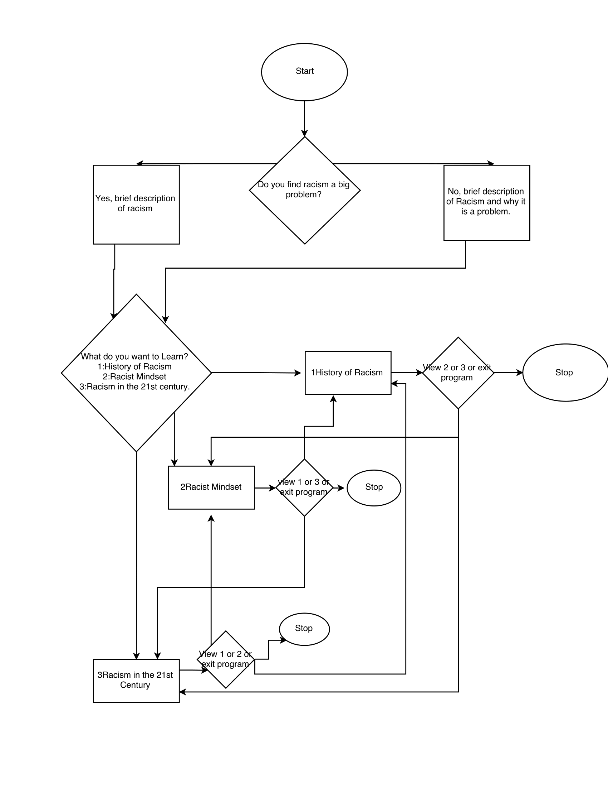

My project was done on Systematic Racism and is an interactive text to educate the reader.
You need to download 64 bit pygame in order to run this file. Link Below
64 Bit PygameOnce it has downloaded, open up Canopy's welcome page, navigate to the Tools menu and select "Canopy Command Prompt" then type in 'pip install pygame'
Our project was to investigate a correlation between Illegal Immigration and Terrorist Acts originating from Foreign Countries
This simulation was meant to simulate a population's reactions to a leader's behavior in which the reactions go accordingly to Machiavelli's beliefs in his political treatise "The Prince".